Produksjonslønn er en lønnsform som kobler ansattes lønn direkte til produksjonsmengde eller produksjonsverdi. I motsetning til fastlønn, varierer produksjonslønn med hvor mye den ansatte produserer, noe som skaper et direkte insentiv for økt produktivitet. Denne lønnsformen er vanlig i produksjonsbedrifter, håndverksfag og servicetjenester hvor det er mulig å måle individuell eller gruppebasert produksjon.
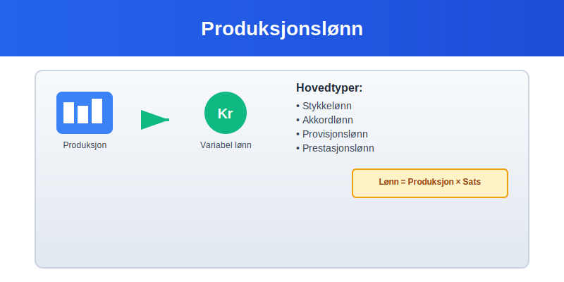
Typer Produksjonslønn
Stykkelønn
Stykkelønn er den mest direkte formen for produksjonslønn, hvor ansatte får betalt per produserte enhet:
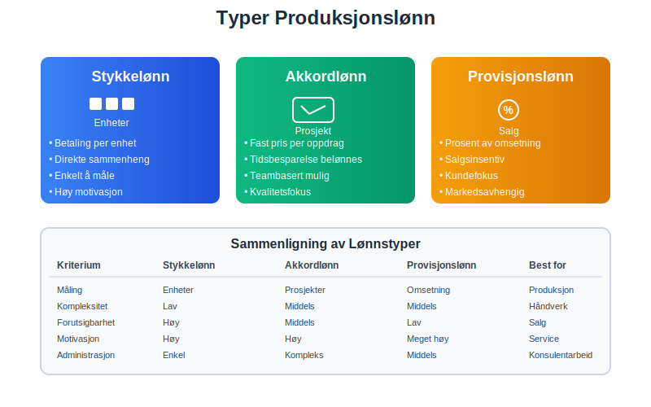
- Ren stykkelønn - kun betaling per produserte enhet
- Kombinert stykkelønn - fastlønn pluss stykkelønn-tillegg
- Garantert stykkelønn - minimum garantilønn uavhengig av produksjon
- Progressiv stykkelønn - økende betaling per stykke ved høyere volum
Akkordlønn
Akkordlønn er en form for produksjonslønn basert på avtalt pris for et bestemt arbeidsoppdrag:
- Tidsakkord - basert på normaltid for oppgaven
- Prestasjonsakkord - inkluderer bonuskomponent ved rask gjennomføring
- Gruppeakkord - delt blant teammedlemmer
Provisjonslønn
I servicebransjer brukes ofte provisjonslønn som form for produksjonslønn:
- Ren provisjon - kun basert på salg eller omsetning
- Provisjon pluss fastlønn - kombinert modell
- Trappeprovisjoner - økende prosentsats ved høyere volum
Regnskapsmessig Behandling
Klassifisering i Regnskapet
Produksjonslønn klassifiseres som lønnskostnader og behandles forskjellig avhengig av type:
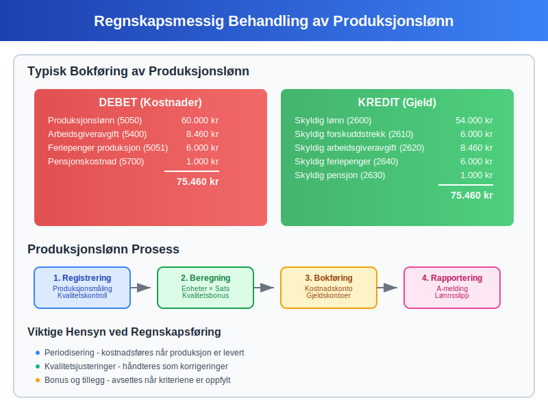
| Lønnstype | Kontoklasse | Behandling | Periodisering |
|---|---|---|---|
| Direkte produksjonslønn | 5000-5099 | Direkte kostnad | Månedlig |
| Indirekte produksjonslønn | 5100-5199 | Overheadkostnad | Månedlig |
| Provisjonslønn | 5200-5299 | Salgskostnad | Når opptjent |
| Akkordlønn | 5000-5099 | Prosjektkostnad | Etter fremdrift |
Bokføring av Produksjonslønn
Månedlig bokføring av produksjonslønn følger samme prinsipper som for lønnskostnader:
Debet: Produksjonslønn (5050) 60.000 kr
Debet: Arbeidsgiveravgift (5400) 8.460 kr
Debet: Feriepenger produksjon (5051) 6.000 kr
Kredit: Skyldig lønn (2600) 54.000 kr
Kredit: Skyldig forskuddstrekk (2610) 6.000 kr
Kredit: Skyldig arbeidsgiveravgift (2620) 8.460 kr
Kredit: Skyldig feriepenger (2640) 6.000 kr
Periodisering og Avsetninger
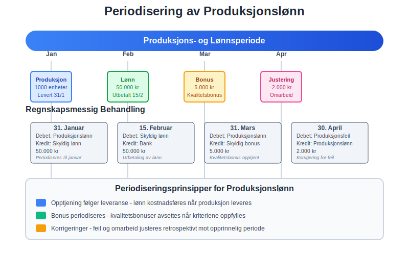
Produksjonslønn krever spesiell oppmerksomhet ved periodisering:
- Opptjent produksjonslønn - avsettes når produksjon er levert
- Ubetalte bonuser - periodiseres månedlig
- Sesongvariasjoner - jevnes ut over året
- Kvalitetsjusteringer - justeres retrospektivt
Beregning og Måling
Produksjonsmåling
For å beregne produksjonslønn må produksjonen måles nøyaktig:
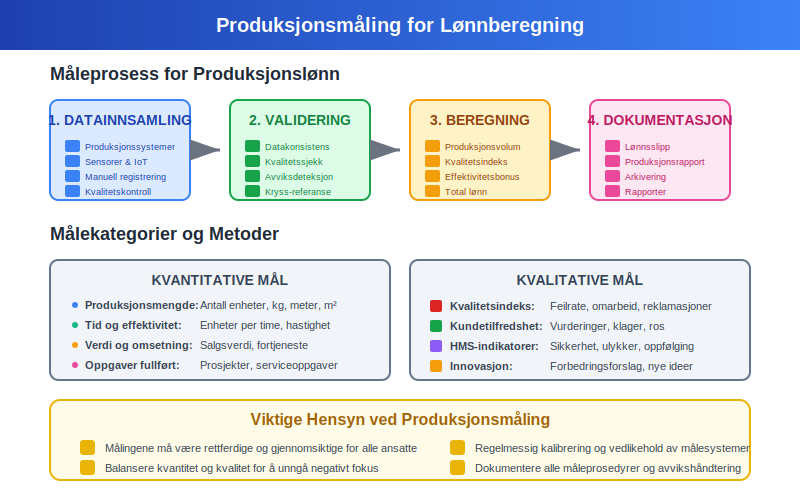
Kvantitative mål:
- Antall enheter produsert per time/dag/måned
- Vekt eller volum av produksjon
- Kompletterte oppgaver eller prosjekter
- Salgsinntekter generert (for provisjonslønn)
Kvalitative mål:
- Kvalitetsindeks - feilrate og omarbeid
- Kundetilfredshet - service og leveringskvalitet
- Effektivitet - ressursbruk og sløsing
- Sikkerhet - HMS-indikatorer
Beregningseksempel
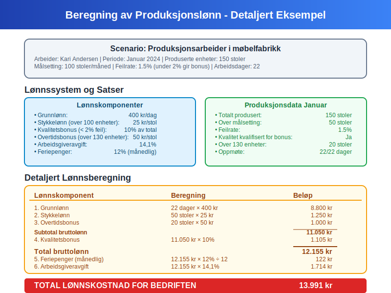
Eksempel: Stykkelønn i produksjonsbedrift
En arbeider produserer 150 enheter per dag med følgende satser:
- Grunnlønn: 200 kr per dag
- Stykkelønn: 5 kr per enhet over 100 enheter
- Kvalitetsbonus: 10% ved under 2% feilrate
| Beregningskomponent | Utregning | Beløp |
|---|---|---|
| Grunnlønn | Fast dagslønn | 200 kr |
| Stykkelønn | (150-100) × 5 kr | 250 kr |
| Kvalitetsbonus | 450 kr × 10% | 45 kr |
| Total daglønn | 495 kr |
Fordeler og Ulemper
Fordeler for Bedriften
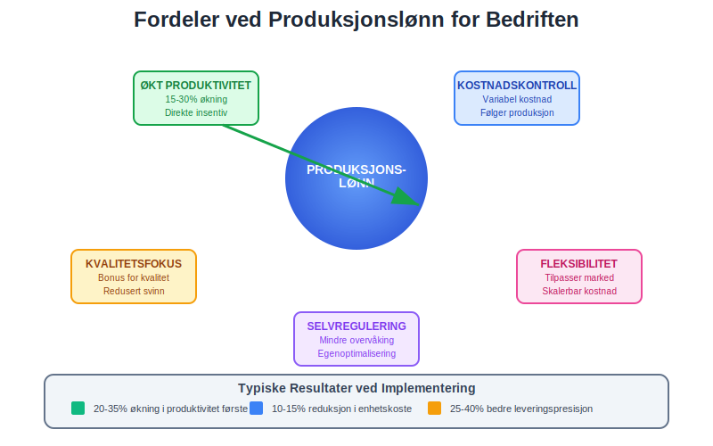
- Økt produktivitet - direkte insentiv for høyere produksjon
- Kostnadskontroll - lønn følger produksjonsvolum
- Selvregulering - ansatte motiveres til å optimalisere arbeid
- Kvalitetsfokus - belønning for feilfri produksjon
- Fleksibilitet - kostnader tilpasses markedssvingninger
Fordeler for Ansatte
- Høyere inntektspotensial - belønning for høy innsats
- Kontroll over egen lønn - påvirke inntekt gjennom arbeidsinnsats
- Anerkjennelse - direkte verdsetting av prestasjoner
- Karriereutvikling - synliggjøring av ferdigheter
Utfordringer og Ulemper
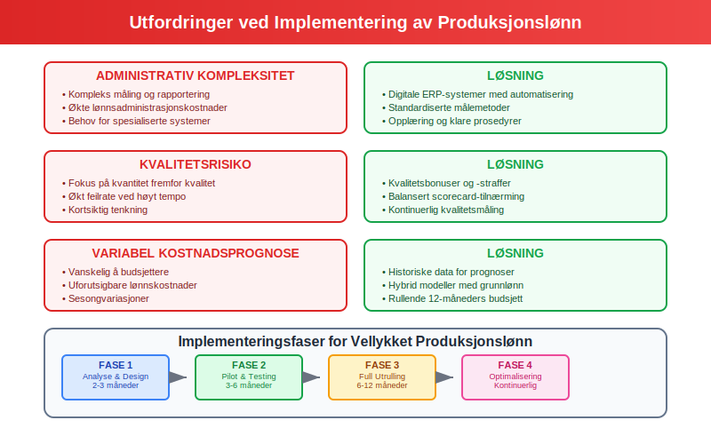
For bedriften:
- Administrativ kompleksitet - måling og rapportering
- Kvalitetsrisiko - fokus på kvantitet fremfor kvalitet
- Variabel kostnadsprognose - vanskelig å budsjettere
- Motivasjonsutfordringer - kan skape intern konkurranse
For ansatte:
- Inntektusikkerhet - variabel månedslønn
- Arbeidspress - konstant fokus på produksjon
- Begrenset samarbeid - individuelt fokus kan hemme teamarbeid
- Slitasjerisiko - risiko for overbelastning
Juridiske Rammer
Tariffavtaler og Lovgivning
Produksjonslønn må følge arbeidsmiljøloven og relevante tariffavtaler:
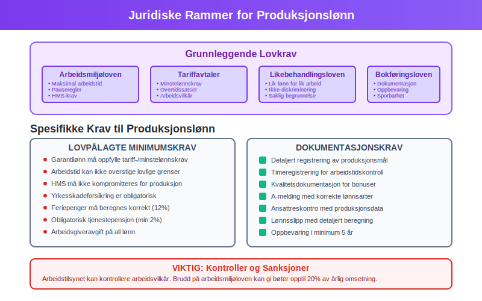
- Minstelønnskrav - garantilønn må oppfylle minimumskrav
- Arbeidstidsregulering - maksimal daglig og ukentlig arbeidstid
- Pauseregler - rett til hvile og fridager
- HMS-krav - sikkerhet må ikke kompromitteres for produksjon
- Likebehandling - lik lønn for lik arbeid
Rapportering og Dokumentasjon
Produksjonslønn må dokumenteres i A-meldingen og ansattreskontro:
- Detaljert registrering av produksjonsmål og oppnådde resultater
- Timeregistrering for å sikre lovlig arbeidstid
- Kvalitetsdokumentasjon for bonusutbetalinger
- Tariffbestemmelser og avtalevilkår
Implementering og Best Practices
Planlegging og Design
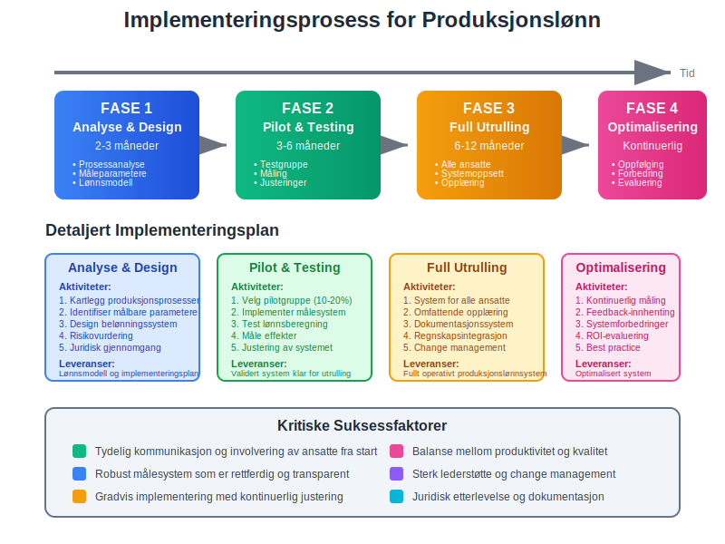
Fase 1: Analyse og design
- Kartlegging av produksjonsprosesser
- Identifisering av målbare parametere
- Utvikling av belønningssystem
- Risikovurdering av implementering
Fase 2: Testing og tilpasning
- Pilotprosjekt med utvalgte ansatte
- Måling av effekter på produktivitet og kvalitet
- Justering av satser og måleparametere
- Opplæring av ansatte og ledere
Fase 3: Full implementering
- Utrulling til alle relevante stillinger
- Oppfølging og kontinuerlig forbedring
- Rapportering og evaluering
- Vedlikehold av system og prosesser
Digitale Verktøy og Systemer
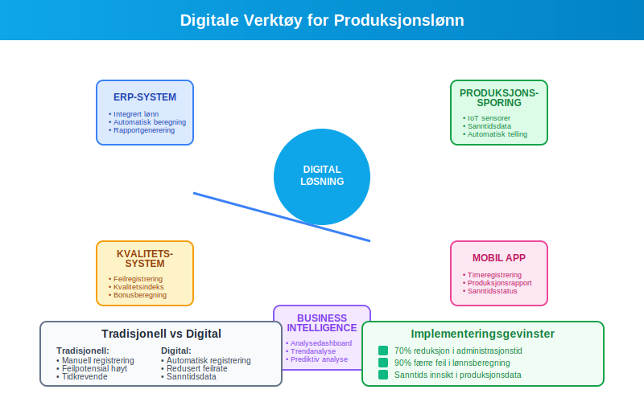
Moderne bedrifter bruker digitale systemer for å håndtere produksjonslønn:
- ERP-systemer - integrert håndtering av produksjon og lønn
- Tidsregistrering - automatisk registrering av arbeidstid og produksjon
- Kvalitetssystemer - måling av feilrater og kundeklager
- Business Intelligence - analyse av produktivitet og kostnader
- Mobile apper - sanntidsrapportering fra produksjonsgulvet
Bransjespesifikke Anvendelser
Produksjonsindustri
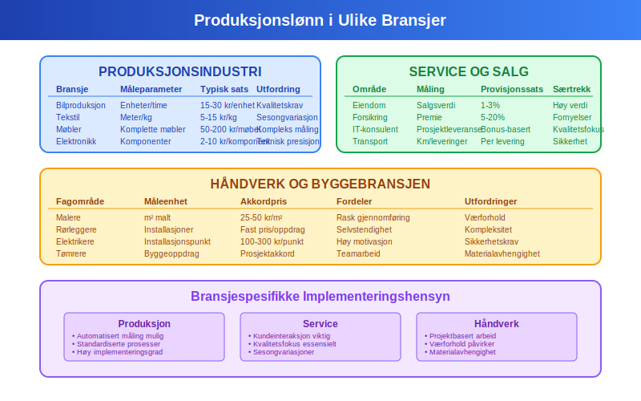
| Bransje | Vanlige måleparametere | Typiske satser | Utfordringer |
|---|---|---|---|
| Bilproduksjon | Enheter per time | 15-30 kr/enhet | Kvalitetskrav |
| Tekstilproduksjon | Meter/kg produsert | 5-15 kr/kg | Sesongvariasjoner |
| Møbelproduksjon | Komplette møbler | 50-200 kr/møbel | Kompleks måling |
| Elektronikk | Komponenter montert | 2-10 kr/komponent | Teknisk presisjon |
Service og Salg
- Eiendomsmegling - provisjon av salgsverdi (1-3%)
- Forsikringssalg - provisjon av premie (5-20%)
- IT-konsulentvirksomhet - bonus ved prosjektleveranser
- Transport - betaling per kjørte kilometer eller leveringer
Håndverk og Byggebransjen
- Malere - betaling per kvadratmeter malt
- Rørleggere - akkordarbeid på installasjoner
- Elektrikere - fast pris per installasjonspunkt
- Tømrere - akkord på byggeoppdrag
Fremtidige Trender
Teknologisk Utvikling
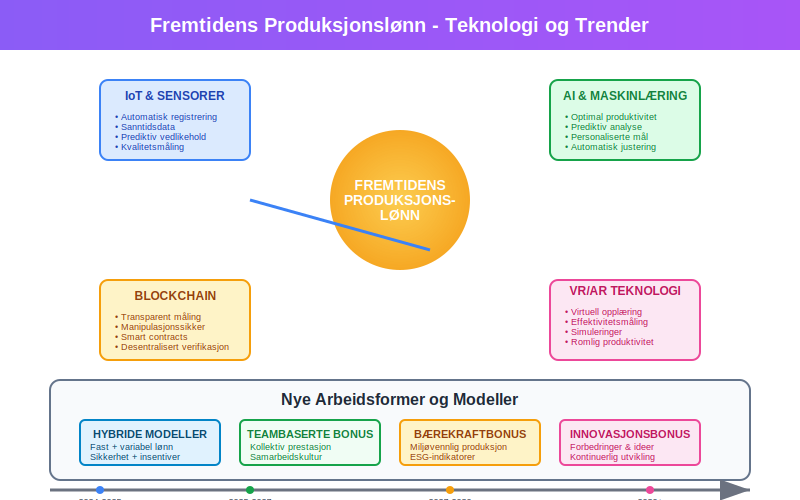
- IoT og sensorer - automatisk registrering av produksjon
- AI-basert optimalisering - prediktiv analyse av produktivitet
- Blockchain - transparent og manipulasjonssikker måling
- Virtuell virkelighet - opplæring og kompetanseutvikling
Nye Arbeidsformer
- Hybride modeller - kombinasjon av fast og variabel lønn
- Teambaserte bonuser - fokus på kollektiv prestasjon
- Bærekraftsbonus - belønning for miljøvennlig produksjon
- Innovasjonsbonus - betaling for forbedringer og ideer
Kostnadsanalyse og Lønnsomhet
Sammenligning med Fastlønn
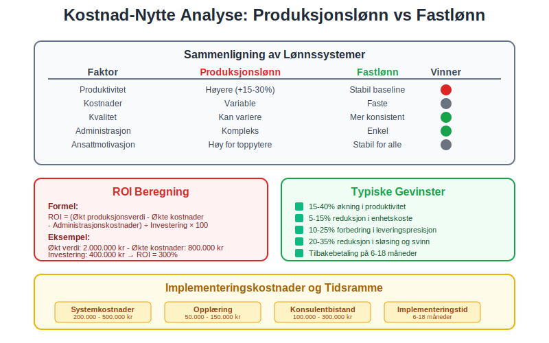
Produksjonslønn vs fastlønn:
| Faktor | Produksjonslønn | Fastlønn |
|---|---|---|
| Produktivitet | Høyere (+15-30%) | Stabil baseline |
| Kostnader | Variable | Faste |
| Kvalitet | Kan variere | Mer konsistent |
| Administrasjon | Kompleks | Enkel |
| Ansattmotivasjon | Høy for toppytere | Stabil for alle |
ROI-beregning
For å vurdere lønnsomheten av produksjonslønn:
ROI = (Økt produksjonsverdi - Økte lønnskostnader - Administrasjonskostnader)
÷ Investering i system og opplæring × 100
Typiske gevinster:
- 15-40% økning i produktivitet
- 5-15% reduksjon i enhetskoste
- 10-25% forbedring i leveringspresisjon
- 20-35% reduksjon i sløsing og svinn
Konklusjon
Produksjonslønn er et kraftfullt verktøy for å øke produktivitet og koble ansattes innsats direkte til bedriftens resultater. For å lykkes med implementering må bedrifter:
- Planlegge grundig - analysere prosesser og definere målbare parametere
- Involvere ansatte - sikre forståelse og støtte for systemet
- Implementere gradvis - teste og justere før full utrulling
- Følge opp kontinuerlig - måle effekter og justere ved behov
- Overholde juridiske krav - sikre etterlevelse av lover og avtaler
Ved riktig implementering kan produksjonslønn bidra til økt lønnsomhet, konkurranseevne og ansattmotivasjon, samtidig som det gir bedre kostnadskontroll og fleksibilitet i produksjonen.